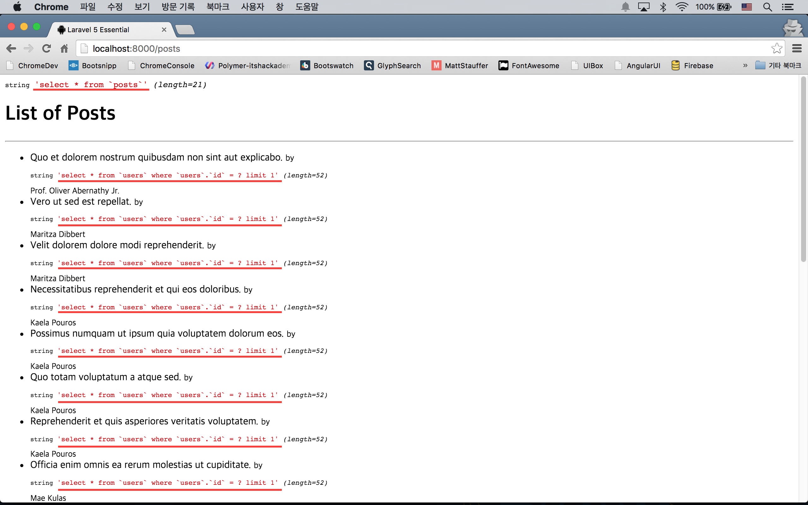

20강 - Eager 로딩
Eager 로딩은 N+1 쿼리 문제를 해결해 주는 방법이다. 겁먹을 필요 없다, 아주 간단하니까.
N+1 쿼리 문제를 만들어 보자.
"18강 모델 관계 맺기" Post와 User 모델을 그대로 사용하자. app/Http/routes.php 를 작성하자.
Route::get('posts', function() {
$posts = App\Post::get();
return view('posts.index', compact('posts'));
});resources/views/posts/index.blade.php를 만들자. "19강 데이터 심기" 에서 만든 Post 모델의 'title'과, Post 작성자의 'name'을 뷰에 뿌릴 것이다. @forelse 루프 안에서 {{ $post->user->name }} 와 같은 식으로 User 모델의 'name' 속성에 접근한 것을 확인하자.
@extends('master')
@section('content')
<h1>List of Posts</h1>
<hr/>
<ul>
@forelse($posts as $post)
<li>
{{ $post->title }}
<small>
by {{ $post->user->name }}
</small>
</li>
@empty
<p>There is no article!</p>
@endforelse
</ul>
@stop서버를 부트업하고 'posts' Route를 방문해 보자. 잘 출력되었는데 이게 무슨 문제란 것인가? 자 여기서 실제 백그라운드에서 발생하는 쿼리를 살펴 보자. app/Http/routes.php 에 아래 코드를 넣고, 브라우저에서 페이지를 새로고침 해 보자.
DB::listen(function($sql, $bindings, $time){
var_dump($sql);
});알림 라라벨 5.2를 사용한다면 위 코드에서 에러가 날 것이다. 여기를 참고해서 알맞게 코드를 수정하자.
다음과 같은 쿼리를 볼 수 있다. 즉, {{ $post->user->name }} 에서 매번 쿼리를 하는 것이다.
select * from postsx 1건select * from users where users.id = ? limit 1x N건

Eager 로딩으로 N+1개의 쿼리를 2개로 만들어 보자.
app/Http/routes.php 에서 엘로퀀트 쿼리를 아래와 같이 수정하고 브로우저에서 페이지를 새로고침해 보자.
Route::get('posts', function() {
$posts = App\Post::with('user')->get();
return view('posts.index', compact('posts'));
});쿼리가 2개로 줄어든 것이 보이는가?
select * from postsx 1건select * from users where users.id in (?, ?, ?, ?, ?, ?, ?, ?, ?, ?)x 1건
with(string|array $relations) 메소드는 항상 엘로퀀트 모델 바로 뒤, 다른 메소드를 체인하기 전에 써야 한다. 메소드의 인자는 테이블 이름이 아니라, 모델 클래스에서 정의한 관계를 나타내는 메소드 이름임을 잘 기억하자.
Lazy Eager 로딩
가끔 엘로퀀트를 이용한 쿼리를 먼저 만들어 놓고, 나중에 관계를 로드해야 하는 경우가 발생할 수 있다. 예를 들면, 쿼리 하나를 여러 번 재사용할 경우, 앞에서는 Eager 로딩이 필요없었지만, 나중에 필요하게 되는 경우 등이 해당된다. 이때는 load(string|array $relations) 메소드를 이용할 수 있다.
Route::get('posts', function() {
$posts = App\Post::get();
$posts->load('user');
return view('posts.index', compact('posts'));
});